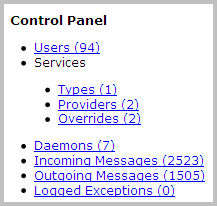
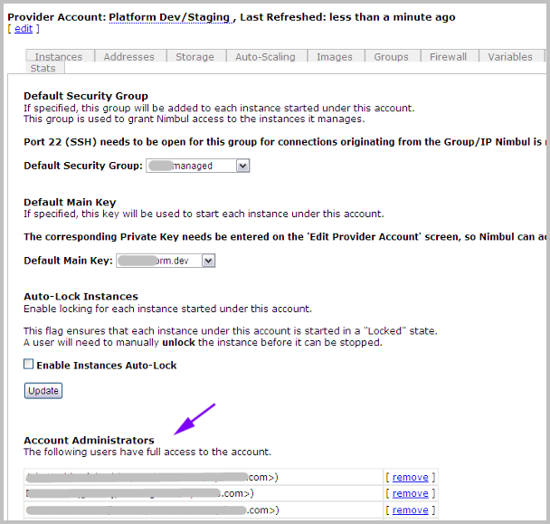

Navigation
The Nimbul user interface is web-based. On every Nimbul page, the main menu in the top left corner gives you access to the dashboard and the main UI areas.
Dashboard
When you first log in to Nimbul, a dashboard appears, summarizing the objects you have access to:
Click a dashboard item to view information about that type of object. See also the object hierarchy.
In the lower part of the main dashboard, a table shows your recent activity. Within the table, click an account name or object name for details.
You can also search for specific activity by typing keywords in the Your Recent Activity search box. Click the refresh icon to limit the table rows to activity that matches your search terms.
When you click an object type on the main dashboard, a dashboard for that object appears, providing links to details and options for filtering the table. For example, when you click Instances on the main dashboard, an instances dashboard appears, showing summary information for all instances currently in the system:
Using the buttons at the top, you can filter the table to show only those instances you have launched, or to show instances by state (Running, Terminated or Pending). Click an instance ID for more details, or click a provider account, cluster or server name to view those details. You can also view console output directly from the table by clicking the icon in the last column.
UI Areas
You can think of Nimbul as having a few main “areas” that offer multiple access points to several sets of data.
- The Clusters Area: In the main Nimbul menu, click Clusters. This area of Nimbul gives you access to clusters and allows you to drill down to servers, instances and other aspects of each cluster.
- The Provider Accounts Area: In the main Nimbul menu, click Provider Accounts. This area gives you access to provider accounts and allows you to drill down to a wealth of information about each account.
- The Administration Area: In the main Nimbul menu, click Admin Controls to administer users, services and daemons, as well as view system messages and logged exceptions. This option will not appear in the main Nimbul menu unless you are a Nimbul administrator. (If you are not a system administrator, you can still view and edit your own account information by clicking [Your User Name]’s Account in the main Nimbul menu.)

Multiple Access Points
The Nimbul areas described above offer different entry points to several categories of information. As you use Nimbul, you will see that some information appears in more than one area of the system and on several different tabs. The multiple access points are designed to ensure that you have the data you need — anytime you need it.
Examples
- Example 1: Instances: Information about instances appears in the provider accounts area and the clusters area.
In the provider accounts area, instances for all server clusters are listed on the Instances tab, with links to more details about each instance. The provider accounts area includes system-owned instances that were launched outside of Nimbul and have not yet been mapped to a server profile.
In the clusters area, the Servers tab groups instances by server; within each server group, instances can be shown or hidden. Links are also provided to more details about each instance. Unlike the provider accounts area, the clusters area does not provide information about system-owned instances that were launched outside of Nimbul — in order to appear in the clusters area, the instance must be mapped to a server profile.
- Example 2: User Access: In Nimbul, you can set user access rules for provider accounts and clusters. User access information appears in the provider accounts area, the clusters area and the administration area.
In the provider accounts area, the Security tab lists current account administrators and allows you to designate additional administrators.

In the administration area, you can edit access rules for a specific user. On each user page, check boxes allow you to grant administrator access to specific clusters or all clusters under a particular provider account.
In the clusters area, the Security tab lists current cluster administrators and allows you to designate additional cluster administrators. (Note that these administrators are at the cluster level, not the provider account level.)
{kind=link}
As shown in these examples, each area (administration, provider accounts, clusters) gives you access to the relevant information for that area. Updates you make in each area will be immediately reflected in the other areas.
Related Topics
Next: UI Elements »